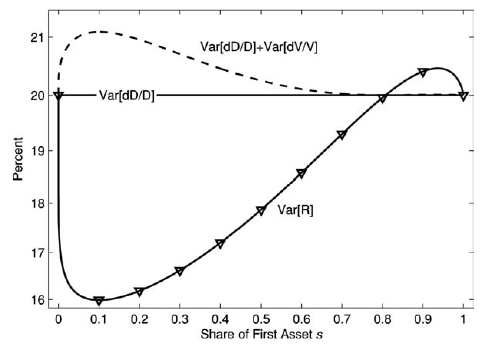
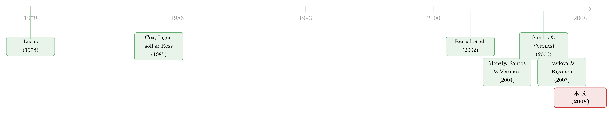

两棵树的寓言：当「i.i.d. 收益」撞上「卖不掉的股票」
本文读的是 Cochrane, Longstaff & Santa-Clara (2008, Review of Financial Studies)：他们求解了一个只有「两棵卢卡斯树」、对数效用、股利服从几何布朗运动的极简模型。单棵树时价格-股利比是常数、收益是 i.i.d.；可一旦多出第二棵树，时变的预期收益、超额波动、动量、反转、可预测性、甚至「凭空」出现的共同因子全都冒了出来——而这一切只来自市场出清，不来自偏好，也不来自现金流的任何动态。
1 一个看似无害的基准，其实暗藏矛盾
资产定价的理论与实证，几乎都把「收益在时间上独立同分布（independent and identically distributed, i.i.d.）」当成最自然的出发点。随机游走、有效市场、Black-Scholes 里那条几何布朗运动——它们背后都默认了这件事。
可是稍一深想，你会发现一件别扭的事：在一个有多种正净供给资产的世界里，i.i.d. 收益其实几乎是不可能的。
为什么？设想某只股票、某个板块涨了。每一个理性的投资者都会想：它现在在我组合里占的比重太高了，我得卖一点、再平衡回去。问题在于——我们不可能所有人一起卖。市场上每一份卖单都要有人接，平均而言，所有投资者加总起来必须持有整个市场组合。既然大家不能集体再平衡，那这只涨上去的股票，就必须有别的什么发生变化，来劝服投资者心甘情愿地多拿一点：要么它的预期收益升上去，要么它的某个收益矩（波动、相关性……）动一动。
于是一个尖锐的问题摆在面前：i.i.d. 收益这个用了几十年的基准，在「供给固定」的真实世界里，到底凭什么成立？
本文的回答是：它确实可以不成立，而让它不成立的那股力量，就是市场出清（market clearing）本身。作者想做的，不是去拟合实证里那些复杂的收益动态，而是把这股力量从所有其他因素里单独剥离出来，看清楚它究竟长什么样。为此，他们搭了一个尽可能干净的实验室。
2 最简单的实验室：两棵卢卡斯树
代表性投资者拥有对数效用：
$$U_t = E_t\left[\int_0^\infty e^{-\delta\tau}\ln(C_{t+\tau})\,d\tau\right]$$
经济里有两棵树（two Lucas trees，源自 Lucas 1978 的交换经济）。每棵树吐出一条股利流 \(D_i\,dt\)，股利服从参数完全相同的几何布朗运动（geometric Brownian motion, GBM）：
$$\frac{dD_i}{D_i} = \mu\,dt + \sigma\,dZ_i,\qquad i=1,2$$
其中 \(dZ_1, dZ_2\) 是两个相互独立的标准布朗运动。这是个纯禀赋经济（endowment economy），价格调整到投资者恰好愿意把全部股利吃光为止，即 \(C = D_1 + D_2\)。
请注意这个设定有多「无趣」：两条股利各自独立、同分布、i.i.d.；偏好是最简单的对数效用。如果只有一棵树，这就是教科书里那个著名的单树模型——价格-股利比恒为常数 \(P/D = 1/\delta\)，收益完全 i.i.d.。所有的故事，都将仅仅来自「加上第二棵树」这一步。 这正是作者反复强调的一句话：less is more。如果再往里塞长期风险、习惯形成、生产与投资，我们就再也分不清哪些动态来自市场出清、哪些来自偏好或技术了。
3 份额：唯一的状态变量
两棵树的相对大小，是这个经济里唯一的状态变量。作者用股利份额（dividend share）来刻画它：
$$s = \frac{D_1}{D_1 + D_2}$$
接着，一个自然的问题是：这个 \(s\) 自己怎么演化？对定义式用伊藤引理（Itô's Lemma），得到：
$$ds = -2\sigma^2 s(1-s)\left(s-\tfrac{1}{2}\right)dt + \sigma s(1-s)\left(dZ_1 - dZ_2\right)$$
这里藏着一个微妙而漂亮的点。份额的漂移项是一条 S 形曲线：在 \(s=0,\ 1/2,\ 1\) 处为零，在 $(0,1/2)$ 上为正、在 $(1/2,1)$ 上为负——也就是说，份额有向 1/2 均值回复的倾向。但要命的是，两条股利的增长率本身是独立的，谁也没有「小了就追上来」的机制。这股均值回复，纯粹是 \(s\) 这个非线性定义经过二阶伊藤项挤出来的——你看那个漂移，系数里带着 \(\sigma^2\)，一旦 \(\sigma=0\) 漂移就消失了。
不过这股回复力很弱。作者举例：在 \(s=1/4\)、\(\sigma=0.20\) 时，漂移只有 \(3/32\times\sigma^2\)，折算下来每年区区 0.375 个百分点。而份额的波动率却相当可观——在 \(s=1/2\)、\(\sigma=0.20\) 时高达每年 5 个百分点。波动的「发散」压过了漂移的「回复」，所以这个份额过程没有平稳分布。这一点很重要：本文所有的动态都来自市场出清，作者刻意不在股利里放任何让小树「追赶」的动力。
4 价格从哪里来：一条非单调的曲线
有了状态变量，定价就水到渠成。先看几个全局的量。
无风险利率。 对数效用下定价核（discount factor）是 \(M_t = e^{-\delta t}/C_t\)，由此
$$r\,dt = -E_t\!\left[\frac{dM}{M}\right] = \delta\,dt + E_t\!\left[\frac{dC}{C}\right] - \mathrm{Var}_t\!\left[\frac{dC}{C}\right]$$
代入两树的总消费动态 \(dC/C = \mu\,dt + \sigma s\,dZ_1 + \sigma(1-s)\,dZ_2\)，其方差是 \(\sigma^2[s^2+(1-s)^2]\)，于是
$$r = \delta + \mu - \sigma^2\left[s^2 + (1-s)^2\right]$$
利率竟然随份额变动！原因很直观：当两棵树势均力敌（\(s\) 居中）时，消费在两条独立股利之间被分散了，总消费波动更小，预防性储蓄动机更弱，所以利率更高。单树世界里那条恒定平坦的利率期限结构，到这里也活了过来。
市场组合。 对数效用的老规矩：消费索取权的价格-股利比恒为 \(V_M = P_M/C = 1/\delta\)，对任何消费动态都成立。市场的股权溢价等于市场收益的方差 \(\mathrm{Var}_t[R_M]=\sigma^2[s^2+(1-s)^2]\)，因而市场越「两极分化」、夏普比越高。
但真正关键的一步，在于单只资产的价格-股利比。 第一棵树的价格满足 \(P_t = E_t\int_0^\infty e^{-\delta\tau}\frac{C_t}{C_{t+\tau}}D_{t+\tau}\,d\tau\)，用份额改写后变成一件优雅的事：给第一棵树定价，在形式上等同于以折现率 \(\delta\) 对一笔「现金流恰好等于股利份额 \(s\)」的资产做风险中性定价：
$$\frac{P}{C} = E_t\!\left[\int_0^\infty e^{-\delta\tau}\, s_{t+\tau}\,d\tau\right]$$
在对称且 \(\delta=\sigma^2\) 的简化参数下（\(\sigma=0.20\) 对应 \(\delta=0.04\)，并不离谱），可解出闭式：
$$V \equiv \frac{P}{D} = \frac{1}{s}\frac{P}{C} = \frac{1}{2\delta s}\left[1 + \frac{1-s}{s}\ln(1-s) - \frac{s}{1-s}\ln(s)\right]$$
证明思路本身就很有教益：因为 \(s\) 是马尔可夫过程，\(P/C\) 必是 \(s\) 的函数；对它用伊藤引理得到 \(E[d(P/C)]\) 的一个表达式；同时由定价式可知
$$E\!\left[d\frac{P}{C}\right] = \delta\frac{P}{C} - s$$
两个 \(E[d(P/C)]\) 相等，就得到一个常微分方程，再验证上式正好是它的解。
这条 \(V\) 曲线长得出人意料：在小份额处 \(V\) 极高，随 \(s\) 上升一路下滑，到 \(s=0.5\) 时已低于市场的 \(25\)（\(=1/\delta\)），之后又掉头回升，在 \(s=1\) 处重新等于 25。这种非单调是必须的——市场组合那个恒定的 \(25\)，永远等于两只资产 \(V\) 的份额加权平均；若第一棵树在 \(s=0.25\) 处的 \(V\) 高于市场，那么由对称性，它在 \(s=0.75\) 处就必须低于市场。而 \(V\) 在 \(s\to0\) 时冲向无穷，机制是风险溢价的坍缩：份额越小，这棵树的股利与总消费越不相关，越接近一个「无风险证券」，折现率掉到接近股利增长率 \(\mu\)，估值便爆炸。一个份额小的资产，从分散化的角度看反而更值钱。
5 收益的四块拼图
价格知道了，收益也就跟着出来了。把瞬时收益写成股利收益、股利增长、估值变化与一个伊藤项之和，再取期望，预期收益可拆成四块：
正是第四块——那个负的协方差——藏着全篇最反直觉的机制。当第一棵树来一个正的股利冲击，它的份额 \(s\) 上升，而由第 4 节那条曲线，份额上升会强烈压低 \(V\)。于是「股利涨」与「估值跌」负相关，把预期收益拉了下来。
整理后，预期收益与超额收益有闭式（\(r\) 用第 4 节那条）：
$$E_t[R] = \mu + 2\delta(1-s) + \frac{s}{1-s}\left(1 - \frac{\ln(s)}{V}\right)$$
$$E_t[R] - r = 2\delta(1-s)^2 + \frac{s}{1-s}\left(1 - \frac{\ln(s)}{V}\right)$$
预期收益随份额先升、到约 \(s=0.80\) 附近见顶、再略微回落——它恰好是第 4 节那条 \(V\) 曲线的镜像。道理很干净：股利增长率是常数，那么价格-股利比之所以会变，唯一的原因就是预期收益在变；低预期收益必对应高 \(V\)。所以「value/growth 效应」在这个最朴素的模型里天然成立——高 \(P/D\) 的资产预期收益低，反之亦然。
6 动量、反转，与「凭空」出现的波动
把上面这条「预期收益随份额上升」的规律动态地读一遍，故事就活了。
动量与「反应不足」。 在 \(s\) 低于约 0.80 的广阔区间里，一个正的自身股利冲击抬高份额、进而抬高未来的预期收益——也就是说，好消息之后还跟着一连串预期中的价格上涨。价格看起来在「慢慢消化」消息、在「漂移」，收益呈现正自相关，活脱脱就是「动量（momentum）」。
反转与「过度反应」。 可一旦 \(s\) 越过 0.80，预期收益转为随份额下降，同一个正冲击此时带来的是后续预期收益走低——这就成了「均值回复」「过度反应」与超额波动。
于是反转出现：同一个机械的市场出清，在状态空间的不同区域，既能制造动量、又能制造反转。
「无中生有」的波动与传染。 更妙的是跨资产的一面。当第一棵树涨、份额上升，第二棵树的份额下降，它的预期收益随之下降、价格反而上涨——第二棵树的价格动了，却没有任何关于它自己股利的新消息。这是一个纯粹的「贴现率效应（discount rate effect）」，也是超额波动的又一来源。结果是：尽管两条股利在统计上完全独立，两只资产的收益却可以同期正相关——一个「共同因子」或「传染（contagion）」凭空出现在收益里，而现金流里压根没有共同因子。
也正因为如此，收益波动率与现金流波动率不再相等。在单树世界里，收益方差就等于股利增长方差；可在两树世界里，估值的波动会通过上面的协方差项加进来或抵消掉。如图 4 所示，收益波动率随份额呈现出与现金流波动率明显不同的形状——这恰恰是市场出清在「数量固定」约束下留下的指纹。

Figure 4: plots the return volatility given in Equation (33) along with
还有一层时间序列的含义：既然股利增长 i.i.d.、价格-股利比却在变，那么 \(P/D\) 就能预测收益——无论在时序上还是横截面上。把「两棵树」想成「股票 vs. 其他所有资产（债券、房产、人力资本）」，那么价格-股利比就能预测股指收益。这些效应，又与前面那种短期正自相关并存。（关于「价格-股利比为何是收益、而非现金流的预报器」，可参见 Cochrane 本人那篇《贴现率：资产定价的中心议题》。）
7 一个更深的命题：技术，而非偏好
讲到这里，作者抛出了全文最有分量、也最容易被忽视的一句话。
他们追问：我们信了几十年的 i.i.d. 收益，难道是个错误吗？答案是「不」——i.i.d. 收益在逻辑上当然可能，但它依赖于一套很不现实的供给侧假设。设想：每当价格上涨就瞬间配以股票回购、每当价格下跌就瞬间增发，于是每只证券的市值恒定不变，市场组合从不改变，自然也就没有任何收益矩需要变动，投资者可以集体再平衡。用经济学语言说，这等价于线性技术（linear technology）假设——产出是资本的线性函数，没有调整成本、没有不可逆性（这正是 Cox, Ingersoll & Ross 1985 里显式的设定）。
作者由此给出一个犀利的区分：那些交出 i.i.d. 收益的模型，其实应该叫「资产数量模型」（asset quantity models），而非「资产定价模型」——因为在那里价格与预期收益是外生给定的，模型决定的只是市场组合的构成（数量）。
那么哪个假设对？现实介于两者之间：市场组合的权重确实会随时间变化，所以一个现实的模型至少含有某些短期的调整成本、不可逆性与对总量再平衡的阻碍——也就必然含有本文所隔离出来的那类市场出清动态。但长期看新投资会发生、新股会增发、旧资本会折旧重配，所以纯禀赋结构也不现实，本文这类动态会在更长的时间跨度上越来越不适用。
这就是本文真正想钉进读者脑子里的那一个核心：资产定价的「技术/供给」根基，对收益动态的影响，远比通常以为的要重要。动态并不只来自偏好。
8 文献脉络
这条线索的起点是 Lucas (1978) 的交换经济与单棵「树」，以及 Merton (1973) 的跨期资本资产定价框架。供给侧那一面，则由 Cox, Ingersoll & Ross (1985) 的线性技术一般均衡奠定——本文关于「资产数量 vs 资产定价」的论断，正是站在它的肩膀上反着读出来的。

进入 2000 年代，一批模型开始给「多条现金流」定价，并大量借用「股利份额」这一状态变量来获得可解性：Bansal, Dittman & Lundblad (2002)、Menzly, Santos & Veronesi (2004)、Longstaff & Piazzesi (2004)、以及 Santos & Veronesi (2006)。它们往往加入非 i.i.d. 的股利过程与时间不可分的偏好，去贴合数据。与此并行，Gomes, Kogan & Zhang (2003) 等把投资与生产搬进来，内生化现金流动态。再往外，国际金融里 Hau & Rey (2004)、Guibaud & Coeurdacier (2006)、Pavlova & Rigobon (2007) 则用多树框架建模国别资产市场与汇率。
本文恰好选择了与这条「越加越复杂」的路相反的方向：把一切都拿掉，只留两棵 i.i.d. 的树和对数效用，从而把市场出清这一股力量单独照亮。它不与上面这些模型争实证拟合，而是为它们提供一块共同的基石。
评论与延伸（Q&A + 研究方向）
(a) 几个可能的疑问
Q：两棵树和单树的 Lucas 模型、和 CAPM 到底差在哪？
差在「能不能集体再平衡」。单树模型里只有一种资产，谈不上再平衡，所以 \(P/D\) 恒定、收益 i.i.d.。CAPM 式的推导默认需求去适应一个固定的股票供给。两树模型的全部新意，就是当某棵树涨了，平均投资者无法集体卖出（供给固定），价格必须自己调整去出清——于是预期收益、波动、相关性全都变成了状态 \(s\) 的函数。
Q：股利明明 i.i.d.，凭什么收益会可预测、还有动量？
因为收益不只是股利，还包含估值（\(P/D\)）的变化。股利份额 \(s\) 是一个高度持续的状态变量，它驱动 \(V\) 缓慢移动，而 \(V\) 的可预测变动就给收益注入了可预测性与自相关。换句话说，可预测性来自贴现率（估值）通道，不是现金流通道。
Q：\(P/D\) 为什么是先降后升这种古怪的非单调形状？
这是一个会计恒等式逼出来的。市场组合的 \(P/D\) 恒为 \(1/\delta=25\)，而它必须等于两只资产 \(P/D\) 的份额加权平均。若小份额时第一棵树的 \(P/D\) 高于市场，对称性就要求它在大份额时低于市场，并在 \(s=1\) 处回到 25。叠加上「小资产因与消费不相关而接近无风险、估值飙升」的力量，就得到了那条先高、下滑、再回升的曲线。
Q：模型一会儿说「正自相关、动量」，一会儿又说「过度反应、反转」，不自相矛盾吗？
不矛盾，因为它们发生在状态空间的不同区域。预期收益随份额先升后降，拐点约在 \(s=0.80\)：拐点以下，正股利冲击推高未来预期收益 → 动量；拐点以上，正冲击压低未来预期收益 → 反转。同一个机制，两种表象。
Q：「资产数量模型」和「资产定价模型」的区分，意义在哪？
它提醒我们：能产出 i.i.d. 收益的模型，往往暗含「供给瞬间适应需求」（线性技术、即时回购/增发）的假设，此时价格和预期收益是外生的，模型只决定了市场组合的数量构成。真正的资产「定价」，必须让供给有某种固定性或摩擦——而这恰恰会内生出本文那类动态。
Q：对数效用和「只有两棵树」的限制有多要命？能推广吗？
作者很诚实：他们的解析解只对对数效用和两棵树成立。更高的风险厌恶、更多的树都是值得做、且不会单靠自身引入动态的扩展——前者可能放大市场出清动态的量级、改善与数据的契合，后者本身就重要。但目前的求解方法做不到，这是模型透明性换来的代价。
(b) 几个可能的研究问题与提案
1. 把「两棵树」读成「股票 vs. 公司债」两大类资产。 【经济故事】本文明说两棵树可代表股票与债券这样的大类资产。若把信用市场当作其中一棵树，市场出清动态就预言：当股票相对债券大涨、份额上升时，债券应出现「无新消息却价格变动」的贴现率效应，并与股票收益同期正相关——这能否解释危机期间股债相关性的符号翻转？ 【可行性】中。数据上用股票与公司债总指数即可构造份额 \(s\)，识别难点在于要把市场出清效应与宏观共同冲击、flight-to-quality 区分开，需要在控制现金流新闻后看残差相关性。
2. 外资持有人作为「再平衡冲击」的外生来源。 【经济故事】本文的核心是「无法集体再平衡 → 价格必须动」。外资在美国公司债里的进出，正是一类对国内投资者而言近乎外生的份额冲击。当外资大举买入某一段信用市场，国内投资者被迫减持、其余资产估值被动调整——这是否在数据里留下了本文预言的「contagion without common cash-flow factor」？ 【可行性】中。可用 TRACE 成交 + 外资持仓（如 TIC、Flow of Funds 分解）。识别上可借汇率/税收冲击或指数纳入作为外资流的工具变量，难点是外资流本身可能携带信息，需小心排除。（这一机制与《巨头越涨，基金越要卖它：藏在动量里的「再分散」需求》里被动再平衡的逻辑同源。）
3. 把份额的非平稳性映射到指数集中度。 【经济故事】本文强调份额过程没有平稳分布，会持续漂移、可能极度两极化。当下「七巨头」式的指数集中，正是 \(s\to1\) 的现实版。模型预言：高度集中时市场夏普比更高、单只巨头与其余市场出现强烈的 cross-serial 负相关。这些可被检验。 【可行性】高。集中度与收益数据现成，横截面回归即可起步；要更干净则需控制基本面集中度（盈利份额）来分离「定价」与「数量」两个通道。（与《两种市场收益的故事：当「市场组合」其实只是一小撮巨头》的关切直接相通。）
4. 给两棵树装上流动性/调整成本，量化超额波动的放大。 【经济故事】本文是无摩擦禀赋经济。现实里再平衡有交易成本与流动性约束。若在两树模型里引入资产特定的价格冲击，市场出清被迫得更剧烈，理论上会放大「贴现率效应」造成的超额波动——流动性越差的那棵树，被动估值波动越大。 【可行性】低到中。理论扩展会破坏对数效用的解析解，需数值方法；实证对应物是「流动性差的资产是否表现出更强的、与自身现金流无关的估值波动」，可用公司债流动性度量去检验，但把市场出清效应与流动性溢价本身分开并不容易。
我的判断
这篇论文的贡献，不在于它「拟合」了什么——作者自己一再声明它在量化上并不贴合实证。它的价值在于隔离：用一个干净到近乎苛刻的设定，证明了动量、反转、可预测性、超额波动、传染这一整套实证语汇，可以仅由市场出清、在 i.i.d. 现金流与对数效用之下生成。这是一种「存在性证明」式的智识贡献，它把「资产定价的供给/技术根基」这个长期被偏好叙事盖住的维度，重新推到台前。对任何想理解「为什么收益不是 i.i.d.」的人，这都是一块绕不开的基石。
要说担忧，有两点。其一是它刻意不做识别——这是理论论文，没有数据，所以真正的考验在后续：当有人把它的预言（如份额对预期收益的非单调关系、无现金流新闻的传染）拿去和数据对账时，市场出清效应能否从其他通道里被干净地剥出来，仍是悬而未决的。其二是可推广性的代价：解析解被锁死在对数效用和两棵树上，而风险厌恶和资产数目恰恰是最想放开的两个旋钮；在拿到更一般的（哪怕是数值的）解之前，我们不知道这些动态的量级在更现实的偏好下是被放大还是被淹没。
我接下来最想看到的，是把这套「数量固定 → 价格必须动」的逻辑，搬到一个有摩擦、有外生再平衡冲击的信用市场里去——外资进出公司债、或指数被动资金的潮汐，都是天然的实验场。如果本文的贴现率效应真的在那里留下了可观测的指纹，那它就不只是一则优雅的理论寓言了。
参考文献
- Bansal, R., R. F. Dittman, and C. T. Lundblad (2002). Consumption, Dividends, and the Cross Section of Stock Returns. Working Paper, Duke University.
- Cochrane, J. H., F. A. Longstaff, and P. Santa-Clara (2008). Two Trees. Review of Financial Studies 21(1), 347–385.
- Cox, J. C., J. E. Ingersoll, and S. A. Ross (1985). An Intertemporal General Equilibrium Model of Asset Prices. Econometrica 53(2), 363–384.
- Gomes, J. F., L. Kogan, and L. Zhang (2003). Equilibrium Cross-Section of Returns. Journal of Political Economy 111(4), 693–732.
- Hau, H., and H. Rey (2004). Can Portfolio Rebalancing Explain the Dynamics of Equity Returns, Equity Flows, and Exchange Rates? American Economic Review 94(2), 126–133.
- Longstaff, F. A., and M. Piazzesi (2004). Corporate Earnings and the Equity Premium. Journal of Financial Economics 74(3), 401–421.
- Lucas, R. E., Jr. (1978). Asset Prices in an Exchange Economy. Econometrica 46(6), 1429–1445.
- Menzly, L., T. Santos, and P. Veronesi (2004). Understanding Predictability. Journal of Political Economy 112(1), 1–47.
- Merton, R. C. (1973). An Intertemporal Capital Asset Pricing Model. Econometrica 41(5), 867–888.
- Pavlova, A., and R. Rigobon (2007). Asset Prices and Exchange Rates. Review of Financial Studies 20(4), 1139–1181.
- Santos, T., and P. Veronesi (2006). Labor Income and Predictable Stock Returns. Review of Financial Studies 19(1), 1–44.